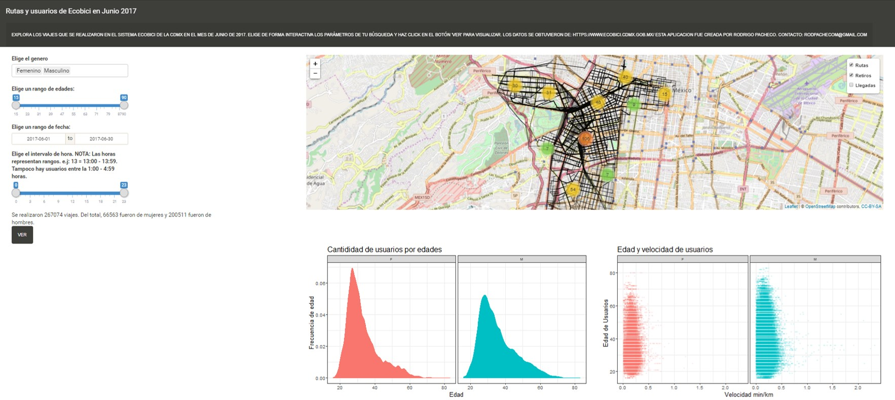

| Genero_Usuario | Edad_Usuario | Bici | Ciclo_Estacion_Retiro | Fecha_Retiro | Hora_Retiro | Ciclo_Estacion_Arribo | Fecha_Arribo | Hora_Arribo |
|---|---|---|---|---|---|---|---|---|
| F | 34 | 9287 | 449 | 01/06/2017 | 00:00:14 | 19 | 01/06/2017 | 00:13:57 |
| F | 22 | 9379 | 64 | 01/06/2017 | 00:00:32 | 56 | 01/06/2017 | 00:03:55 |
| M | 24 | 2365 | 74 | 01/06/2017 | 00:01:24 | 23 | 01/06/2017 | 00:10:04 |
| M | 47 | 7931 | 65 | 01/06/2017 | 00:01:45 | 73 | 01/06/2017 | 00:29:44 |
| M | 43 | 8512 | 384 | 01/06/2017 | 00:01:51 | 299 | 01/06/2017 | 00:19:40 |
| M | 36 | 2812 | 340 | 01/06/2017 | 00:02:11 | 349 | 01/06/2017 | 00:15:30 |
| F | 27 | 9888 | 190 | 01/06/2017 | 00:02:20 | 37 | 01/06/2017 | 00:12:19 |
| M | 31 | 9804 | 363 | 01/06/2017 | 00:02:34 | 276 | 01/06/2017 | 00:26:22 |
| M | 24 | 7522 | 231 | 01/06/2017 | 00:03:02 | 7 | 01/06/2017 | 00:32:48 |
| M | 60 | 10049 | 401 | 01/06/2017 | 00:03:43 | 401 | 01/06/2017 | 00:07:03 |
| M | 33 | 9468 | 44 | 01/06/2017 | 00:04:32 | 172 | 01/06/2017 | 00:12:42 |
| F | 27 | 1907 | 74 | 01/06/2017 | 00:05:11 | 79 | 01/06/2017 | 00:29:36 |
| M | 28 | 2571 | 74 | 01/06/2017 | 00:05:22 | 79 | 01/06/2017 | 00:29:25 |
| F | 42 | 2091 | 225 | 01/06/2017 | 00:05:38 | 255 | 01/06/2017 | 00:18:00 |
| M | 30 | 3962 | 257 | 01/06/2017 | 00:05:40 | 27 | 01/06/2017 | 00:11:55 |
| M | 63 | 7985 | 246 | 01/06/2017 | 00:05:48 | 246 | 01/06/2017 | 00:33:44 |
| M | 37 | 8071 | 136 | 01/06/2017 | 00:05:53 | 133 | 01/06/2017 | 00:10:59 |
| M | 27 | 2967 | 175 | 01/06/2017 | 00:05:55 | 173 | 01/06/2017 | 00:11:32 |
| M | 30 | 2200 | 221 | 01/06/2017 | 00:06:01 | 127 | 01/06/2017 | 00:20:56 |
| M | 24 | 3834 | 116 | 01/06/2017 | 00:06:03 | 264 | 01/06/2017 | 00:10:46 |
Ecobici
Análisis espacial
Manejo urbano
Transporte urbano
Ciencia de datos
La información de Ecobici en CDMX permite explorar las principales rutas que toman los usuarios y la dinámica que tienen al usar el servicio. ¡Explóralo en la app!

La CDMX cuenta con una red de transporte público ciclista Ecobici. Esta red ha hecho más ameno el traslado por la ciudad por la actividad física, la experiencia y su rapidez en distancias cortas y medianas, relativo al coche u otras alternativas públicas. Además, los distintos gobiernos han mantenido un esfuerzo por ofertar la información de sus servicios y la demografía de sus usuarios de forma transparente en su portal y API. Esto permite explorar y entender el servicio para reconocer oportunidades estratégicas en sus procesos.
El programa Ecobici inicio en 2010 y sus servicios se ido extendiendo. En su primer año había 10,000 usuarios por día y en un lustro se triplicó a 30,000 usuarios al día. Al momento de esta nota, el servicio cuenta con 452 estaciones y cubre 32 km2.
En este proyecto evalué el uso de las bicis en junio de 2017 y evalué las rutas más concurridas y las velocidades a las que transitan a lo largo del día desglosado por la edad y el sexo de los usuarios. Luego generé una app para cada quien explore esta información como quiera.
Los datos de las bicis
Trabajar solo con el mes de junio de 2017 permite ejemplificar un marco de trabajo dinámico y extrapolable. También economiza en recursos computacionales.
En la siguiente tabla muestro los datos que constituyen la información que oferta el gobierno sobre Ecobici. De izquierda a derecha los datos proporcionan el sexo (Femenino o masculino), la edad, el número de bici, la estación en la que inician su recorrido y donde lo terminan, así como la hora y el día en que la dejan. El total de viajes que muestran estas ocho variables en junio son de 853,651.
La localización de las estaciones se encuentra en otro tabla y la información requiere relacionarse.
| id | zipCode | districtCode | stationType | st1 | st2 | st3 | st4 | lat | lon |
|---|---|---|---|---|---|---|---|---|---|
| 448 | NA | NA | BIKE,TPV | 448 | 448 | 448 | 448 | 19.42661 | -99.14447 |
| 443 | 3340 | 1 | BIKE | 432 | 442 | 444 | 432 | 19.35966 | -99.16202 |
| 416 | 3104 | 1 | BIKE | 390 | 391 | 415 | 390 | 19.37131 | -99.17761 |
| 437 | 3240 | 1 | BIKE | 423 | 436 | 438 | 423 | 19.36481 | -99.17602 |
| 438 | 3240 | 1 | BIKE | 434 | 435 | 437 | 434 | 19.36480 | -99.17458 |
| 440 | 3330 | 1 | BIKE | 433 | 439 | 441 | 433 | 19.36065 | -99.16867 |
| 347 | 3710 | 1 | BIKE,TPV | 334 | 346 | 348 | 334 | 19.38438 | -99.17610 |
| 350 | 3710 | 1 | BIKE | 349 | 352 | 349 | 352 | 19.38406 | -99.18148 |
| 356 | 3100 | 1 | BIKE | 355 | 357 | 372 | 355 | 19.38129 | -99.17017 |
| 361 | 3100 | 1 | BIKE | 354 | 369 | 370 | 354 | 19.38045 | -99.17622 |
| 368 | 3740 | 1 | BIKE | 366 | 367 | 369 | 366 | 19.37925 | -99.17934 |
| 369 | 3740 | 1 | BIKE,TPV | 367 | 368 | 367 | 368 | 19.37988 | -99.17748 |
| 372 | 3104 | 1 | BIKE,TPV | 373 | 378 | 379 | 373 | 19.37797 | -99.17029 |
| 379 | 3104 | 1 | BIKE | 378 | 380 | 395 | 378 | 19.37575 | -99.17084 |
| 402 | 3310 | 1 | BIKE,TPV | 401 | 403 | 405 | 401 | 19.37095 | -99.15872 |
| 3 | 06500 | 1 | BIKE,TPV | 8 | 20 | 86 | 8 | 19.43165 | -99.15867 |
| 12 | 06500 | 1 | BIKE | 11 | 19 | 20 | 85 | 19.43231 | -99.16160 |
| 13 | 06500 | 1 | BIKE,TPV | 7 | 14 | 21 | 7 | 19.42378 | -99.17556 |
| 16 | 06500 | 1 | BIKE | 9 | 23 | 24 | 9 | 19.42653 | -99.16916 |
| 17 | 06500 | 1 | BIKE,TPV | 16 | 18 | 25 | 16 | 19.42750 | -99.16712 |
¿Qué rutas toman?
La información permite relacionar donde inician y terminan el servicio, y contamos con la localización de todas las estaciones. Estos datos permiten generar las rutas más probables por las cuáles transitan. Sin embargo, antes de obtener las rutas se requiere verificar que todos los datos nos sean útiles para ello.
Al revisar la información me percaté de retiros y devoluciones que ocurren en la misma estación. Al ser el movimiento entre estaciones nuestro interés no los consideré. Además, al existir tantas estaciones también existen muchas combinaciones de salidas y llegadas. Sin embargo, el 90% de los viajes se constituye de 49,189 combinaciones de salidas y llegadas.
La API de google maps permite obtener una ruta ciclista proporcionando una salida y una llegada. Este servicio permite solicitar 2,000 rutas, por lo que se requerían 24 días para obtener 49,189 rutas, en caso de no realizar un pago que no realicé. Por ello solo solicité las rutas más concurridas y que acumulan el 64.41% de los viajes (535,523 viajes).
Cada viajes contiene su fecha y hora. La ruta que me proporciona google es la ruta más probable y me permite obtener una distancia. Esta información permite estimar la velocidad del viaje por edad, sexo y hora del día:

El gif resume el resultado de nuestra evaluación de los datos ofertados por Ecobici a las distintas horas del día en en que ocurrieron los viajes. Las velocidades por las mañanas son mejores y decrecen a eso de las 11:00 am, con pocos usuarios durante la noche.
También hay más variabilidad en las velocidades entre los 20 y los 40 años y este intervalo el que más usuarios tiene. Al parecer los usuarios más veloces rondan los 30’s. Es muy notorio que predomina el color azul, que denota una mayoría de usuarios del sexo masculino. Además, las rutas más usadas cruzan av. Reforma y las calles de la Condesa.
Ecobici Shiny app
Este esquema de evaluación de rutas se puede explorar al gusto del usuario a través de la aplicación interactiva Shiny. Da click para usarla (Ten un poco de paciencia si la aplicación demora en desplegarse, ya que muestra todos los viajes disponibles). La siguiente imagen muestra un ejemplo de la interfaz de la aplicación.

---
Este proyecto lo realicé con el propósito de desarrollar mis habilidades en aplicaciones Shiny y en técnicas de análisis espacial